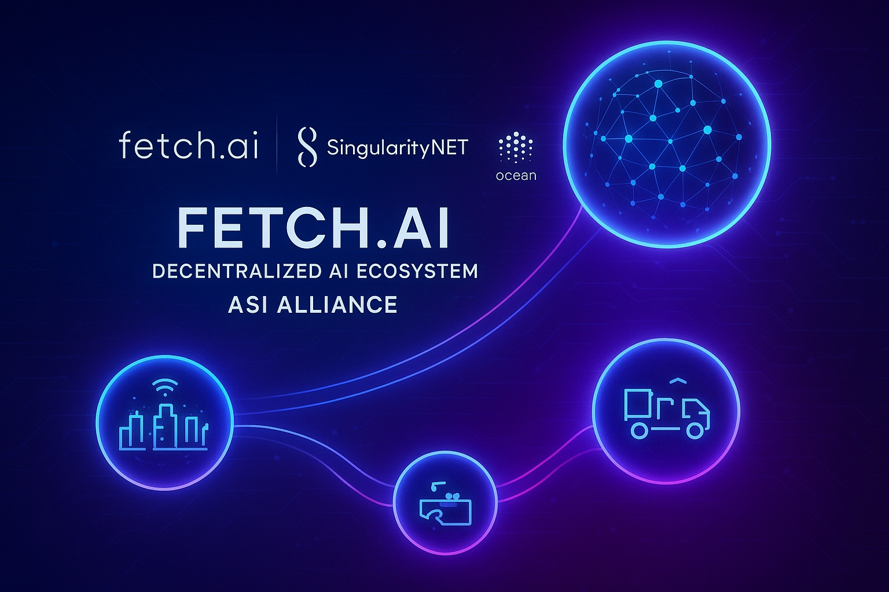
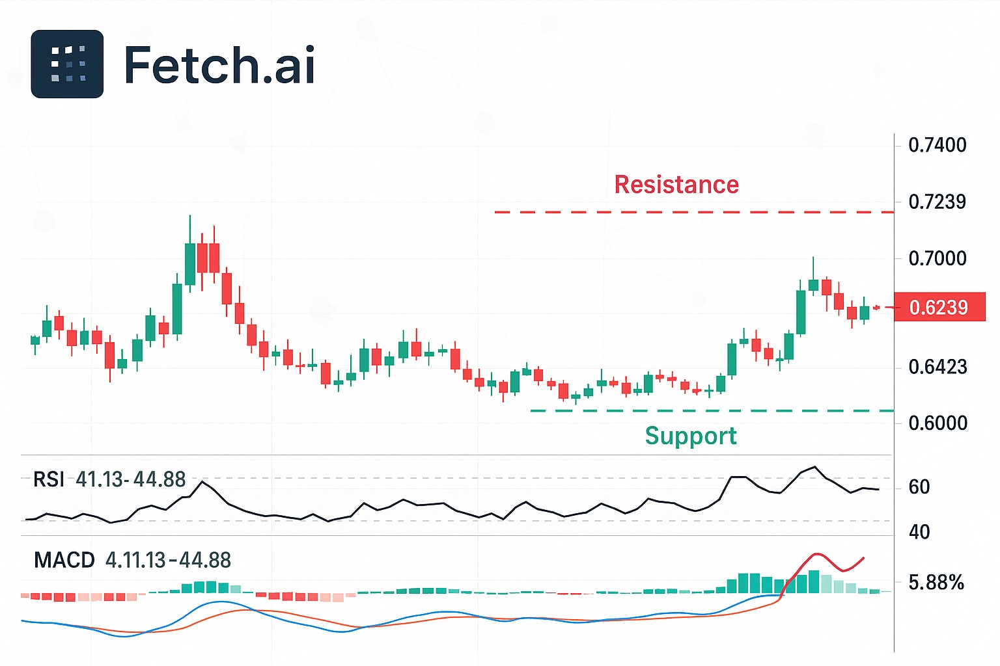

Fetch.ai Price Forecast for End of 2025: Detailed Overview and Projections
The content in this article is intended for informational and educational purposes only and does not represent investment advice. Investing in cryptocurrencies involves risks.
Introduction
As of August 20, 2025, 02:25 AM EEST, Fetch.ai (FET) — now integrated into the Artificial Superintelligence Alliance (ASI) — trades near $0.7011, affirming its position as a top blockchain platform powered by AI. The ASI Alliance, formed through the merger of Fetch.ai, SingularityNET, Ocean Protocol, and CUDOS, seeks to accelerate decentralized artificial intelligence across DeFi, supply chain systems, and IoT. The FET token, which will soon be rebranded as ASI, underpins autonomous AI agents and decentralized data-sharing services. This article provides a comprehensive outlook for FET by the end of 2025, examining bullish and bearish projections, catalysts for growth, and risk factors based on present market dynamics and ecosystem updates.
Current Situation
On August 20, 2025, Fetch.ai trades at around $0.7011, marking a 3% rise in the past 24 hours but still 78.55% down from its March 2024 peak of $3.27. Over the last month, FET registered 15 out of 30 green days (50%) with volatility at 7.32%. The Fear & Greed Index shows a score of 75, reflecting strong greed sentiment. Since the ASI merger finalized in July 2024, FET now represents the merged assets of FET, AGIX, and OCEAN, driving its market cap to $1.62 billion and ranking #58 on CoinMarketCap. Although the token saw a 40% monthly drop, partnerships with Bosch and Polygon along with integrations into exchanges like Uniswap fuel positive long-term sentiment.
Price Predictions for End of 2025
Forecasts for Fetch.ai’s value by December 2025 differ widely due to high volatility and the effects of the ASI integration. Bearish estimates, like Benzinga’s, place FET between $0.44999 and $0.480354 under strong selling pressure. Moderate outlooks, such as CoinCodex, expect a range of $0.762299 to $1.863314, averaging around $1.31. More optimistic predictions, such as Flitpay’s, see potential highs of $5–$10 if a crypto bull market emerges. Cryptopolitan projects $2.19–$2.69, while WalletInvestor remains conservative at $0.645. The outcome depends largely on AI adoption trends and a possible market rebound between February and April 2025.
Factors Driving Price Growth
- AI and Web3 Expansion: FET’s utility in AI-driven decentralized apps and autonomous agents strengthens demand, especially within DeFi and IoT sectors.
- ASI Integration: The merger of Fetch.ai, SingularityNET, Ocean Protocol, and CUDOS unifies the ecosystem and expands its market position.
- Partnerships: Strategic collaborations with Bosch, Polygon, and others reinforce the token’s real-world relevance.
- Market Cycles: A potential crypto bull phase in 2025, particularly in Q1–Q2, could push valuations upward.
- Innovation: Tools like the DeltaV marketplace and uAgent framework further enhance the platform’s AI capabilities.
Risks and Downward Factors
- Market Instability: A projected 30–50% correction in early 2025 could drag FET’s price lower, as seen in previous downturns.
- Regulatory Pressure: Tighter global policies on AI and crypto may limit Fetch.ai’s adoption potential.
- Competitive Landscape: Alternative AI platforms, both centralized and decentralized, could challenge FET’s market share.
Volatility Analysis
Between July and August 2025, FET experienced notable fluctuations: a 3% gain in the last 24 hours but a 40% loss for the month, with volatility at 7.32%. Year-over-year, the asset is down 78.55% from its 2024 high. Current technicals (5 buy, 8 sell) suggest a neutral stance, with an RSI of 41.53, pointing to neither oversold nor overbought conditions. A possible recovery in early 2025 could aid growth as the ASI Alliance broadens AI-driven use cases. With its ties to DeFi, IoT, and major partnerships, FET remains positioned for long-term upside despite short-term turbulence.
Conclusion
By late 2025, FET’s price is expected to fluctuate between $0.645 and $2.69, with upside potential to $5–$10 if supported by AI adoption, the ASI ecosystem, and ongoing partnerships. Nonetheless, investors should remain cautious of volatility, regulatory developments, and competing platforms. Proper research and risk management remain essential before making investment decisions.